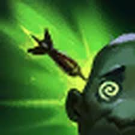
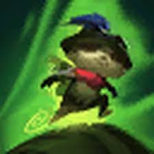
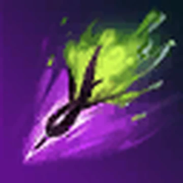
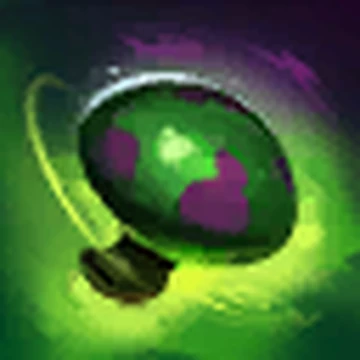

Teemo 🐿️

Who is Teemo?
Teemo is a mischievous scout from Bandle City in League of Legends, known for his small size, fast movement, and deadly traps.
Lore
Teemo is part of the elite Scouts of the Swift, trained to protect Bandle City and explore dangerous regions of Runeterra.
Despite his cute appearance, Teemo is fearless in battle and uses poison mushrooms to control the battlefield and outsmart enemies.
🎮 Gameplay
Teemo Highlights 🍄
Teemo Trap Plays ⚡
Personality
Teemo is cheerful, playful, and sometimes a little too confident. He enjoys exploring and setting traps for unsuspecting enemies.
Abilities
-

Blinding Dart: Fires a dart that blinds the enemy target. -

Move Quick: Increases Teemo’s movement speed. -

Toxic Shot: His attacks poison enemies over time. -

Noxious Trap: Places invisible mushrooms that explode when stepped on.